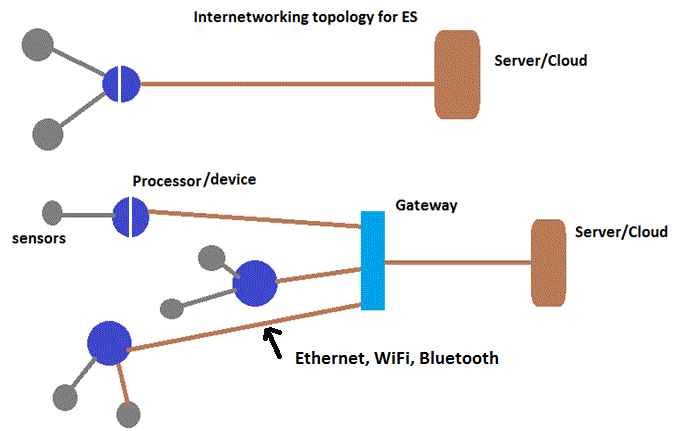
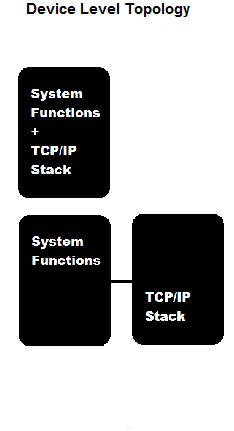

The architecture of IoT is determined by the basic characterstics of embedded systems which are highly constrained in power, performance, size and cost. IoT architectures developement have been driven to meet these tight constrains.
Originally, the internet was designed for full function, resource rich and non-real time devices like desktop PCs, servers, etc. Thus, the internet is not well suited to embedded systems in its basic standard form. However, in the last few decades various solutions have been developed to connect embedded systems to the internet. Internet enabled systems are now growing rapidly and are counting on the billions every year. Both IPv4 and IPv6 encapsulation and addressing result in significant code size. Add to that TCP protocol and application protocols such as the once listed in table 1. In short full stack TCP/IP requires significant memory space, taking into account the limited memory capacity of 8 bit and even 16 bits embedded systems. As a result, because of the limited memory space in many cases of embedded systems code size is an important issue.
To address this problem, efficient Protocol versions such as lwIP, 6LoWPAN, DTLS, etc have been developed. The light weight IP(lwIP) that was initially developed by Adam Dunkels, reduces resource usage greatly while still having a full-scale TCP/IP functionality. It can be used in embedded systems with around 40K program memory space to spare.
Besides there are various architectural decisions that determine which Internet services will be needed by the system. For instance
these decisions determine the transport and application layer protocols code size. In other words, it is important to answer the question which subset of TCP/IP will be included in the embedded system rather than simply loading all available modules however light weight or reduced or lean versions they may be.
Embedded systems are either directly connected to the internet or through a gateway. Communication to the gateway is usually made with NFC technology such as Bluetooth. At a device level the TCP/IP stack may be loaded to the device or it the resources of the device are not sufficient enough an external process may be added as part of the embedded system.
An Embedded system may have a processor capable of accomodating the additional memory and storage require by TCP/Ip stack and the buffere requirements for data transfer. In many other cases, the embedded system may not have that necessary extra memory and storage space. Thus, an external processor has to be installed and interconnected to it
